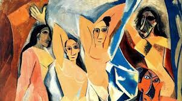
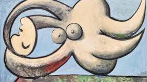
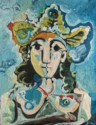
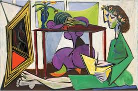
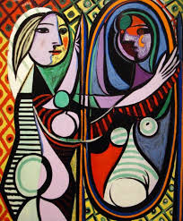

¿Es posible separar la belleza técnica de una obra del acto violento que está representando?
A lo largo de los siglos, la creatividad humana ha servido para elevar el espíritu, pero también ha funcionado como un espejo —a veces distorsionado y otras veces brutalmente honesto— de las dinámicas de poder.
En las galerías de los museos, en los libretos de las óperas y en los escenarios de los teatros, la violencia contra la mujer ha sido un tema recurrente, a menudo disfrazado de mito, romance o destino inevitable.
Desde los pinceles que glorificaron abusos mitológicos hasta las partituras que hicieron de la muerte femenina un espectáculo estético, la cultura ha normalizado el sufrimiento de las mujeres bajo la etiqueta de “obras maestras”.
Obras representativas





Obras de Pablo Picasso
La mirada masculina y el poder
Esta violencia surge del pensamiento que asume que el espectador siempre es un hombre. La mujer es reducida a sus atributos físicos, ignorando su identidad, emociones y autonomía.
Especialmente en la modernidad, con artistas como Picasso, surgió la idea de que el artista tiene “derecho” a consumir o destruir emocionalmente a sus modelos en nombre del arte.
Artistas como Picasso utilizaron el dolor de sus parejas —como Dora Maar— como combustible creativo, transformando sufrimiento real en una supuesta “obra maestra”.
“El arte no es ajeno a la sociedad; la violencia en el lienzo es el reflejo de una cultura que históricamente ha considerado a la mujer como una propiedad.”
El arte como reflejo social
Al representar a la mujer como un ser débil, disponible o silencioso, muchas obras ayudaron a normalizar su subordinación en la vida real.
Aunque la pintura es uno de los medios más evidentes para analizar la “mirada masculina”, la violencia simbólica y física también se manifiesta en otras disciplinas artísticas.
El arte no solo refleja la realidad; muchas veces ayuda a construir los estereotipos que perpetúan el abuso y la desigualdad.
“El arte nació para expresar humanidad, no para silenciarla.”